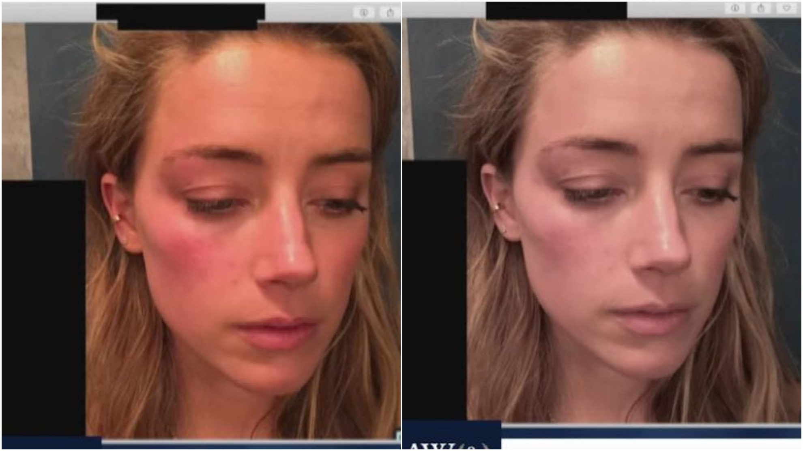

Amber Laura Heard (born April 22, 1986) is an American actress mostly known for her role in the film Aquaman.
Heard was born in Austin, Texas, to Patricia Paige (née Parsons), an internet researcher (1956–2020), and David Clinton Heard (born 1950), who owned a small construction company.[7] She has a younger sister, Whitney.[8] The family lived outside Austin.[5] Heard's father trained horses in his free time, and she grew up riding horses, hunting, and fishing with him.[5] She also participated in beauty pageants, although as an adult she has said that she could no longer "support the objectification".[5][9] Heard was raised as Catholic but began identifying as an atheist at sixteen after her best friend died in a car crash.[9] The following year, Heard said she no longer felt comfortable in "conservative, God-fearin' Texas"[5] and dropped out of her Catholic high school to pursue an acting career in Los Angeles.
Amber Heard got married to a famous actor Johnie Depp.Who is famous for his amousing movies Pirates
of the Caribbean (film series) , Fantastic Beasts and Where to Find Them
Amber took divorce from jhonie in 2016.And years later Amber she accused Mr. Depp with domestic violence. And Amber showed the world of her picture where she had scar on her face and she clamied that Mr. Depp did that to her.Here is the picture

Heard accused Johnie with several things which are given bellow-